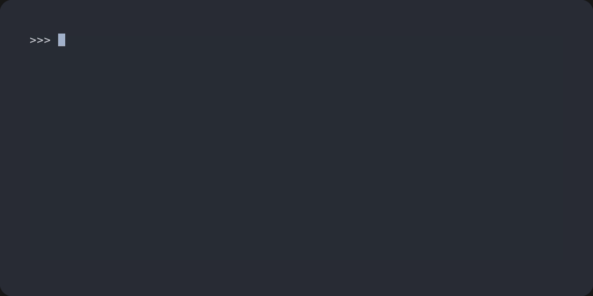

Yuio
Yuio is everything you’ll ever need to write a good CLI, deps-free.
Forget searching for that one progressbar library, figuring out how to keep loading configs DRY, or having headaches because autocompletion was just an afterthought. Yuio got you.
{kind=link}

Features
Easy to setup CLI apps with autocompletion out of the box:
@yuio.app.app def main( #: input files for the program. inputs: list[pathlib.Path] = yuio.app.positional(), ): ... if __name__ == "__main__": main.run()
Colored output with inline tags and markdown:
yuio.io.info('<c bold>Yuio</c>: a user-friendly io library!')
Status indication with progress bars that don’t break your console:
with yuio.io.Task('Loading sources') as task: for source in task.iter(sources): ...
User interactions, input parsing and simple widgets:
answer = yuio.io.ask("What's your favorite treat?", default="waffles")
Tools to run commands:
yuio.exec.sh("ping 127.0.0.1 -c 5 1>&2")
Interactions with git:
repo = yuio.git.Repo(".") status = repo.status() yuio.io.info( 'At branch `%s`, commit `%s`', status.branch, status.commit )
And many more!
Requirements
The only requirement is python >= 3.8.
Installation
Install yuio with pip:
pip3 install yuio
Or just copy-paste the yuio directory to somewhere in the PYTHONPATH of your project.
Examples
See examples at taminomara/yuio.
Contents
Main functionality:
Lower-level details: